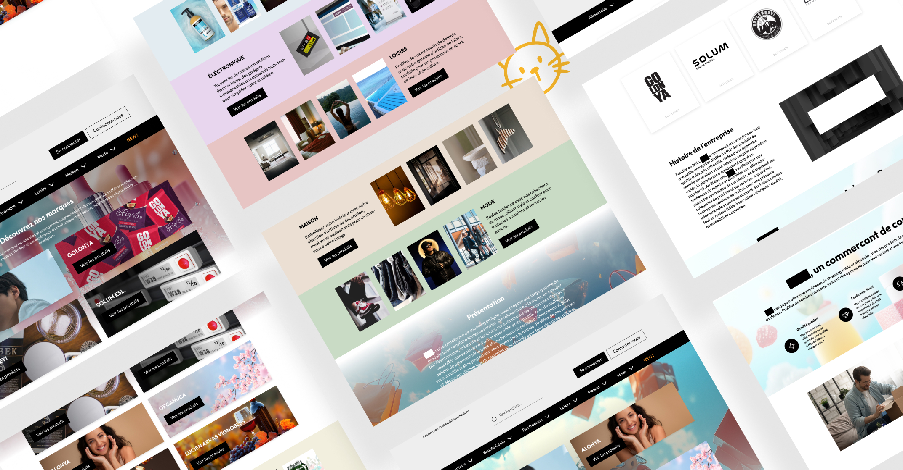
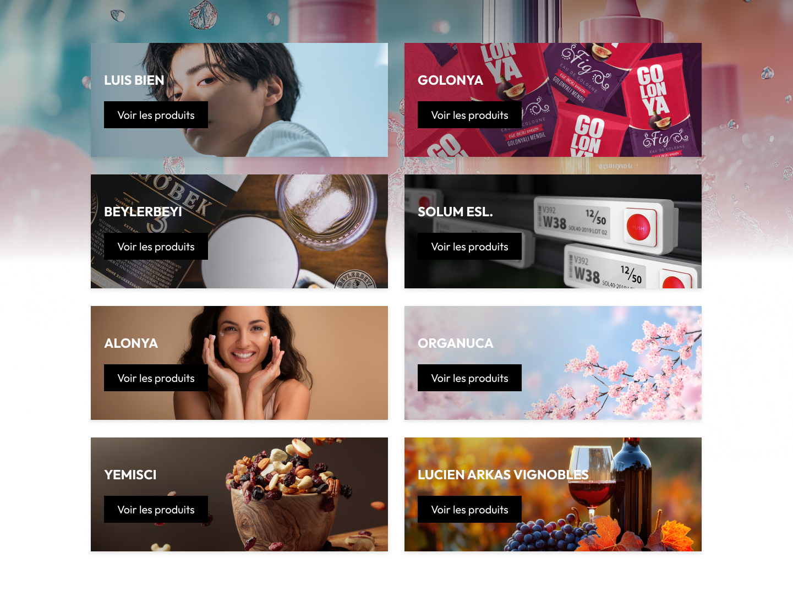

Site e-commerce Multi-marques
Concevoir et intégrer un site e-commerce multi-marques sur Odoo v17 — couvrant plusieurs univers produits avec une navigation par catégories, des pages marques dédiées et une expérience d'achat internationale.
Le projet
Une agence spécialisée dans la distribution de marques internationales — notamment en exclusivité pour certains fournisseurs — souhaitait créer son site e-commerce sur Odoo v17. La plateforme devait permettre de présenter et vendre des produits issus de plusieurs univers (cosmétique, alimentaire, tech, loisirs, mode, maison) tout en valorisant chaque marque de façon distincte, avec livraison internationale et plusieurs moyens de paiement.
→ Navigation claire par catégories et sous-catégories, filtrée par marque
→ Pages marques dédiées avec identité visuelle propre et catalogue associé
→ Livraison mondiale, multilingue (FR/EN), paiements variés (CB, PayPal, Amazon Pay, Alma)

Six univers, une navigation intuitive
Le catalogue couvre des univers très différents — de la cosmétique à l'électronique en passant par l'alimentaire. L'enjeu UX était de structurer cette diversité sans créer de confusion : une barre de navigation claire par univers, avec des sous-catégories accessibles au survol et une page "Marques" transversale.
Alimentaire
Épicerie fine, boissons, produits de spécialité et gastronomie.
Beauté & Soin
Cosmétique, soins visage et corps, parfums et accessoires beauté.
Électronique
Tech, accessoires, étiquettes électroniques et solutions connectées.
Loisirs
Articles de sport, jeux, divertissement et activités créatives.
Maison
Décoration, art de vivre, ustensiles et accessoires du quotidien.
Mode
Prêt-à-porter, accessoires et articles de mode internationale.
Chaque marque, une vitrine à part entière
Plusieurs marques distribuées en exclusivité nécessitaient une mise en avant soignée. La page "Marques" centralise l'ensemble du catalogue partenaires, tandis que chaque fiche marque offre une identité visuelle propre et un accès direct aux produits associés.

Certaines marques étaient distribuées en exclusivité sur la plateforme. Leur page dédiée jouait un double rôle : vitrine produit et argument commercial différenciant pour convaincre de nouveaux acheteurs.
Designer dans un builder natif — trouver l'identité dans les contraintes
Odoo v17 propose un builder de thème natif avec des blocs prédéfinis et peu de latitude sur le code. Le travail de DA consistait donc à trouver une identité forte à l'intérieur de ce cadre — sans customisation lourde, mais avec des choix éditoriaux et visuels précis.
Noir & blanc comme base
Une palette monochrome assumée, inspirée des codes des sites de vente événementielle premium — sobriété, lisibilité, mise en valeur des produits par contraste.
Langage d'étiquettes
Reprise des codes visuels des plateformes de déstockage et vente flash — badges, étiquettes prix, indicateurs "NEW" — pour créer une dynamique d'achat urgente et lisible.
Typographie structurante
Une hiérarchie typographique forte pour compenser l'absence de visuels custom — les noms de marques et catégories deviennent eux-mêmes des éléments graphiques.
Disponible pour de nouveaux projets